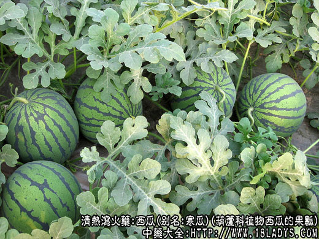

西瓜为少常用中药。始载于《日用本草》。
别名：寒瓜。
来源：为葫芦科植物西瓜的果瓤。西瓜皮、翠、子仁、根叶及西瓜制品亦供药用。均为栽培。
产地：全国大部分地区均有生产。
性状鉴别：本品瓠果近圆形或长椭圆形，直径约30厘米，表面绿色。淡绿色，多具深浅相间的条纹。种子多数，扁平，略呈卵形。气清凉，味甜。
主要成分：西瓜汁含瓜氨酸、丙酸、丙氨酸、α-氨基丁酸、谷氨酸、精氨酸、硫酸、苹果酸、乙二醇、甜菜碱、腺嘌呤、果糖、葡萄糖、蔗糖、盐类（主要为钾盐）、维生素C、β-胡萝卜素、γ-胡萝卜素、番茄烃等。又含挥发性成分、内有乙醛、丁醛、异戊醛、己醛。
炮制：去皮壳及种子、生用。
性味：甘、寒。
归经：入心、胃、膀胱经。
功能：清热解暑、除烦止渴、利小便。
主治：暑热烦渴，热盛伤阴，小便不利，喉痹口疮。
临床应用：西瓜能引心包之热，从小肠、膀胱下泄，故能除心烦口渴之症，并能解阳明胃经、足太阴膀胱之经中热病大渴，故有天生白虎汤之称。现医疗常用此治黄疸型肝炎，取其利阳光派黄祛湿作用。
使用注意：中寒湿盛者忌服。
用量：30～60g，取汁用。
处方举例：1、治阳明热盛、口渴烦躁者，或申请昏冒、不寐、语言懒出者；好红瓤西瓜剖开，取汁一碗，徐徐饮之。（《本草汇言》）。
2、治夏秋腹泻，烦恼不安；将西瓜切开3/10，放入大蒜七瓣，用草纸包七至九层，再用黄土泥包封，用空行筒放入西瓜内出气。木炭烧干，研末，开水吞服。（《中医草药简便验方汇编》）。